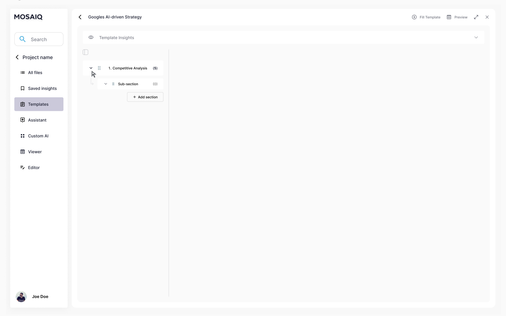

MosaiQ Labs
Integrating AI into workflows
MosaiQ Labs
Junior UX/UI Designer
2023 - 2025
At MosaiQ Labs, I designed UX/UI for an AI-driven research platform in close collaboration with developers. My work focused on creating clear, trustworthy AI interactions, reducing cognitive load, and helping users confidently work with complex systems.

When I joined Mosaiq Labs in 2023, the company intended to create an environment that would facilitate users’ workflows by integrating an AI Assistant to support in the database analysing and in speeding up the production of reliable reports. It was exciting working on this project, as it provided a clear view of companies’ perceptions of AI and the possibilities for integrating it into their bespoke workflows.
We had access to our Beta testing users’ feedback; however, we never had direct access to users, which limited the heuristics we could use to gather valuable insights.
EMPATHYSE
Competitor Analysis
Heuristic Evaluation
Insight Definition
User testing
IDEATION
Brainmapping
"How might we..."
PROTOTYPE
Wireframing
Testing
TEST & VALIDATION
Modify the design
UI
Our target audience was primarely finance consultants —highly skilled at understanding market dynamics and driven by making confident, high-impact investment decisions for their company and clients.
From data collected through feedback and direct observations, we were able to define a pattern of repetitive, mechanical tasks that would benefit from the integration of AI.
-
Collecting & storing a large volume of documents in one place
-
Synthesising large volumes of data
-
And organising information
We translated the insights into "How might we" to reframe users pain-points and friction points into opportunities for innovation.

Blurred image, due to NDA, of the Persona we created as our target audience.
CASE STUDY
-
How might we provide an environment for users to collect, add, and share documents all in one place, and in one click? (if possible).
-
How might we offer a quick way to order, or filter, the collected files?
And digging deeper...
Half-inspired by the design of "Finder" and that of Gmail, we designed the Project Page as a database, showing the list of articles on the left side of the screen. Each file can be selected, selected as favourite, viewed in its original source, and analysed by the assistant. To quickly select and/or favourite articles, skim through the them all, or to order them for a quicker search we introduced:
-
Check-box and a star, respectively to select and faviourite an article
-
Filters at the top of the page to highlight only the required files
-
Tabs at the top of the list, to order the files according to the selected criteria for faster browsing
-
Visual feedback: when the platform fails to upload a file, it provides visual feedbacks in form of a pop-up window at the bottom right of the screen informing the user of the failed attempt, and a red "x" sign appears next to the file's title

-
To "Add Content" to the project, or to "Share" the project's content, we added two dinstinc CTA at the very top of the page, next to the search bar.
-
However, through the download of the MosaiQ Lab extension, users were also able to add multiple pages to their project externally from the platform, which was kind of handy during the collecting material phase of the research process.


Eventually, the updated version of the Add Content menu included the possibility to add a broader array of files to the project

MosaiQ extension open, with some of the opened tabs selected
“I just know where to put all my data and analyze it, which makes my process much smoother"
"Whether I'm preparing a financial report or gathering passive insights for future reference, MosaiQ ensures everything is in one place. The ease with which I can transition from passive data accumulation to active analysis has transformed our workflows."
Samantha, Financial Associate - Finance
“I’ve accumulated data and been able to produce investment memos 5x faster"
"From accumulating insights on emerging sectors to diving deep into potential investments, MosaiQ is my go-to. It organizes both my data and my thoughts, helping me pivot from passive understanding to active decision-making effortlessly."
Jasmine, Associate - Venture Capital
From here, we focused on the need to synthesise large volumes of data,. Initially, we focused on the assistant interactions, and on the need to create an intuitive and interactive interface for users. And a whole new set of questions came up.
How might we design ways for users to chat with the assistant in ways that resemble a natural conversation flow?
How might we incorporate ways for users to view the source from which the answer has been extracted from?
However, we soon realise that all the prompt that users were giving to the AI, could easily be translated into AI Modules, aka lines of code that tells the AI what to do, and how to delivery it.
How might we integrate AI Modules in the flow?

When the assistant interact with any specific file from the database, the selected files' background changes colour to strengthen the visual cue between selected and unselected articles.
On top of it, we added a “Reply to” cue confirming the files analysed by the AI. We've added this cue as selected files might not always be visible to the user, especiallu if they end up at the bottom of the list.

Influenced by the ChatGPT design, we’ve iterated on various of the "reasoning behind the process" versions, and we agreed that the thinking process should be triggered, as opposed to be displayed by default, as it created visual noise and broke the communication flow.
While we iterated on the location of the "thinking process", we ultimately concluded that, as part of the conversation, it would make sense to stay inside the main chat placeholder.

At this stage, the AI is capable to digest and synthesise a great deal of information, but still, it requires time to write down, every time, the steps to achieve the task at hand. This is where AI Modules brought the real revolution! With one click, users were able to skip all the steps, and achieve the wanted result! I was so impressed with our Dev team!

Just like in a face-to-face chat with a person, it is normal for the conversation to go back and forth, and take different tangents. New information, or different perceptions around an issue, enrich, confirm, or disprove our knowledge, requireing a reshape of the idea forming in our head.
And so it happens when researching. The more information we acquire, the more the back and forth before a cohesive thought is conceived. In this regard, the more sophsticated the assistant became in answering queries, the higher the need to create a conversation flow that resemble the natural one. To achieve this result, we enabled the "Reply" function, which allowed users to ask questions about a specific segment of the answer.
As mentioned before, once the conversation starts, it can take different directions, and sometimes it can be tricky tracing back the source of a data, or understanding the context in which that information has been provided.
Quickly, it became very important to be able to trace the source from which the data have been extrapolated from, and being able to view the content in its original source.


“The perfect companion throughout my research & report building process”
"Working in market research means juggling vast amounts of data. MosaiQ has been pivotal in helping me centralize this data. Whether I'm passively building an industry understanding or actively preparing a report, the platform ensures I'm always steps ahead."
Carlos, Research Coordinator - Market Research
Last but not least, we tackled the organising information issue
How might we offer a space in which users can structure their deliverable?
How might we offer the possibility then, to save relevant information straight on the deliverable?
